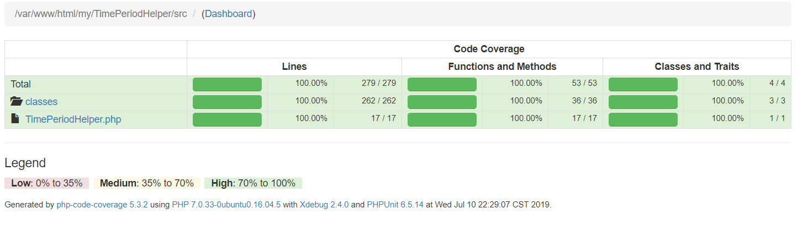
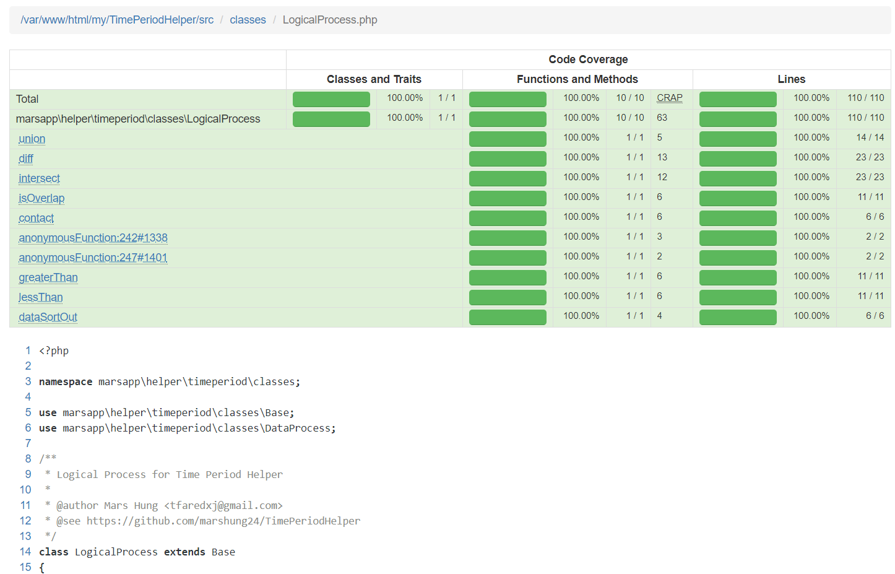
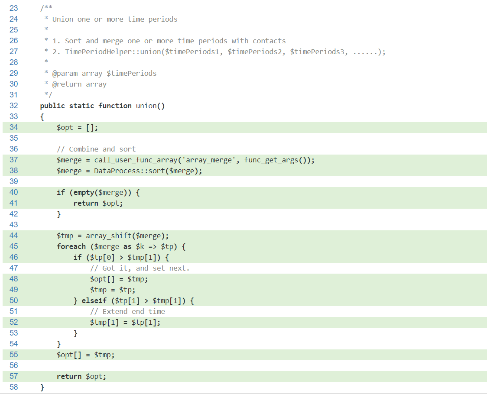
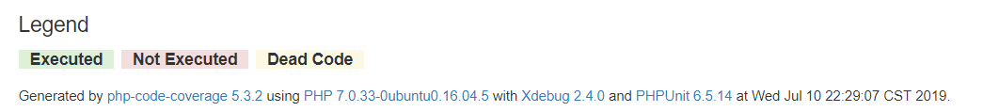

<!DOCTYPE html>
<html>
<head><meta name="generator" content="Hexo 3.8.0">
  <meta charset="utf-8">
  
  <title>使用PHPUnit進行單元測試 | Mars&#39;s Blog</title>
  <meta name="viewport" content="width=device-width, initial-scale=1, maximum-scale=1">
  <meta name="description" content="一、說明 使用PHPUnit進行單元測試，並產生測試報告  二、環境 Ubuntu 16.04 Nginx PHP 7  三、安裝3.1 PHP 檔案包(PHAR) - 全域安裝將PHPUnit安裝到Linux開發環境中，以免在各專案中重複安裝 123456789101112$ # 抓取phar檔案包$ wget https://phar.phpunit.de/phpunit-6.5.phar$">
<meta name="keywords" content="dev,test,tools,phpunit,php,unit test">
<meta property="og:type" content="article">
<meta property="og:title" content="使用PHPUnit進行單元測試">
<meta property="og:url" content="https://blog.mars-world.net/2019/07/03/phpunit/index.html">
<meta property="og:site_name" content="Mars&#39;s Blog">
<meta property="og:description" content="一、說明 使用PHPUnit進行單元測試，並產生測試報告  二、環境 Ubuntu 16.04 Nginx PHP 7  三、安裝3.1 PHP 檔案包(PHAR) - 全域安裝將PHPUnit安裝到Linux開發環境中，以免在各專案中重複安裝 123456789101112$ # 抓取phar檔案包$ wget https://phar.phpunit.de/phpunit-6.5.phar$">
<meta property="og:locale" content="default">
<meta property="og:image" content="https://blog.mars-world.net/2019/07/03/phpunit/coverage-1.png">
<meta property="og:image" content="https://blog.mars-world.net/2019/07/03/phpunit/coverage-2.png">
<meta property="og:image" content="https://blog.mars-world.net/2019/07/03/phpunit/coverage-3.png">
<meta property="og:image" content="https://blog.mars-world.net/2019/07/03/phpunit/coverage-4.png">
<meta property="og:updated_time" content="2019-07-21T16:01:06.699Z">
<meta name="twitter:card" content="summary">
<meta name="twitter:title" content="使用PHPUnit進行單元測試">
<meta name="twitter:description" content="一、說明 使用PHPUnit進行單元測試，並產生測試報告  二、環境 Ubuntu 16.04 Nginx PHP 7  三、安裝3.1 PHP 檔案包(PHAR) - 全域安裝將PHPUnit安裝到Linux開發環境中，以免在各專案中重複安裝 123456789101112$ # 抓取phar檔案包$ wget https://phar.phpunit.de/phpunit-6.5.phar$">
<meta name="twitter:image" content="https://blog.mars-world.net/2019/07/03/phpunit/coverage-1.png">
  
  
  
    <link href="//fonts.googleapis.com/css?family=Source+Code+Pro" rel="stylesheet" type="text/css">
  

  <link rel="stylesheet" href="https://maxcdn.bootstrapcdn.com/bootstrap/3.3.6/css/bootstrap.min.css" integrity="sha384-1q8mTJOASx8j1Au+a5WDVnPi2lkFfwwEAa8hDDdjZlpLegxhjVME1fgjWPGmkzs7" crossorigin="anonymous">

  <link rel="stylesheet" href="https://maxcdn.bootstrapcdn.com/font-awesome/4.5.0/css/font-awesome.min.css" integrity="sha384-XdYbMnZ/QjLh6iI4ogqCTaIjrFk87ip+ekIjefZch0Y+PvJ8CDYtEs1ipDmPorQ+" crossorigin="anonymous">

  <link rel="stylesheet" href="/css/styles.css">
  

</head>
</html>
<body>
  <nav class="navbar navbar-inverse">
  <div class="container">
    <!-- Brand and toggle get grouped for better mobile display -->
    <div class="navbar-header">
      <button type="button" class="navbar-toggle collapsed" data-toggle="collapse" data-target="#main-menu-navbar" aria-expanded="false">
        <span class="sr-only">Toggle navigation</span>
        <span class="icon-bar"></span>
        <span class="icon-bar"></span>
        <span class="icon-bar"></span>
      </button>
      
    </div>

    <!-- Collect the nav links, forms, and other content for toggling -->
    <div class="collapse navbar-collapse" id="main-menu-navbar">
      <ul class="nav navbar-nav">
        
          <li><a class href="/index.html">Home</a></li>
        
          <li><a class href="/archives/">Archives</a></li>
        
          <li><a class href="https://github.com/marshung24">GitHub</a></li>
        
      </ul>

      <!--
      <ul class="nav navbar-nav navbar-right">
        
      </ul>
      -->
    </div><!-- /.navbar-collapse -->
  </div><!-- /.container-fluid -->
</nav>

  <div class="container">
    <div class="blog-header">
  <h1 class="blog-title">Mars&#39;s Blog</h1>
  
    <p class="lead blog-description">Mars&#39;s learning record</p>
  
</div>

    <div class="row">
        <div class="col-sm-8 blog-main">
          <article id="post-phpunit" class="article article-type-post" itemscope itemprop="blogPost">

  <header class="article-header">
    
  
    <h1 class="article-title" itemprop="name">
      使用PHPUnit進行單元測試
    </h1>
  


  </header>

  <div class="article-meta">
    <div class="article-datetime">
  <a href="/2019/07/03/phpunit/" class="article-date"><time datetime="2019-07-03T14:18:23.000Z" itemprop="datePublished">2019-07-03</time></a>
</div>

    <div class="article-author">Mars Hung</div>
    
  <div class="article-category">
    <a class="article-category-link" href="/categories/tools/">tools</a>
  </div>


    <div class="article-reading">
  
  <span id="busuanzi_container_page_pv">文章閱讀量<span id="busuanzi_value_page_pv"></span>次</span>
  
</div>

  </div>
  <div class="article-inner">

    <div class="article-entry" itemprop="articleBody">
      
        
<div id="toc">
    <ol class="toc"><li class="toc-item toc-level-1"><a class="toc-link" href="#一、說明"><span class="toc-text">一、說明</span></a></li><li class="toc-item toc-level-1"><a class="toc-link" href="#二、環境"><span class="toc-text">二、環境</span></a></li><li class="toc-item toc-level-1"><a class="toc-link" href="#三、安裝"><span class="toc-text">三、安裝</span></a><ol class="toc-child"><li class="toc-item toc-level-2"><a class="toc-link" href="#3-1-PHP-檔案包-PHAR-全域安裝"><span class="toc-text">3.1 PHP 檔案包(PHAR) - 全域安裝</span></a></li><li class="toc-item toc-level-2"><a class="toc-link" href="#3-2-Composer安裝"><span class="toc-text">3.2 Composer安裝</span></a></li></ol></li><li class="toc-item toc-level-1"><a class="toc-link" href="#四、Xdebug安裝"><span class="toc-text">四、Xdebug安裝</span></a></li><li class="toc-item toc-level-1"><a class="toc-link" href="#五、產生設定檔"><span class="toc-text">五、產生設定檔</span></a><ol class="toc-child"><li class="toc-item toc-level-2"><a class="toc-link" href="#5-1-指令："><span class="toc-text">5.1 指令：</span></a></li><li class="toc-item toc-level-2"><a class="toc-link" href="#5-2-設定目標："><span class="toc-text">5.2 設定目標：</span></a></li><li class="toc-item toc-level-2"><a class="toc-link" href="#5-3-修改設定-程式碼覆蓋率"><span class="toc-text">5.3 修改設定-程式碼覆蓋率</span></a></li></ol></li><li class="toc-item toc-level-1"><a class="toc-link" href="#六、編寫PHPUnit-測試"><span class="toc-text">六、編寫PHPUnit 測試</span></a></li><li class="toc-item toc-level-1"><a class="toc-link" href="#七、執行測試"><span class="toc-text">七、執行測試</span></a></li><li class="toc-item toc-level-1"><a class="toc-link" href="#八、程式碼覆蓋率分析"><span class="toc-text">八、程式碼覆蓋率分析</span></a></li><li class="toc-item toc-level-1"><a class="toc-link" href="#九、常用測試函式"><span class="toc-text">九、常用測試函式</span></a></li><li class="toc-item toc-level-1"><a class="toc-link" href="#十、參考"><span class="toc-text">十、參考</span></a></li></ol>
</div>

        <h1 id="一、說明"><a href="#一、說明" class="headerlink" title="一、說明"></a>一、說明</h1><ul>
<li>使用PHPUnit進行單元測試，並產生測試報告</li>
</ul>
<h1 id="二、環境"><a href="#二、環境" class="headerlink" title="二、環境"></a>二、環境</h1><ul>
<li>Ubuntu 16.04</li>
<li>Nginx</li>
<li>PHP 7</li>
</ul>
<h1 id="三、安裝"><a href="#三、安裝" class="headerlink" title="三、安裝"></a>三、安裝</h1><h2 id="3-1-PHP-檔案包-PHAR-全域安裝"><a href="#3-1-PHP-檔案包-PHAR-全域安裝" class="headerlink" title="3.1 PHP 檔案包(PHAR) - 全域安裝"></a>3.1 PHP 檔案包(PHAR) - 全域安裝</h2><p>將PHPUnit安裝到Linux開發環境中，以免在各專案中重複安裝</p>
<figure class="highlight plain"><table><tr><td class="gutter"><pre><span class="line">1</span><br><span class="line">2</span><br><span class="line">3</span><br><span class="line">4</span><br><span class="line">5</span><br><span class="line">6</span><br><span class="line">7</span><br><span class="line">8</span><br><span class="line">9</span><br><span class="line">10</span><br><span class="line">11</span><br><span class="line">12</span><br></pre></td><td class="code"><pre><span class="line">$ # 抓取phar檔案包</span><br><span class="line">$ wget https://phar.phpunit.de/phpunit-6.5.phar</span><br><span class="line"></span><br><span class="line">$ # 加入可執行屬性</span><br><span class="line">$ chmod +x phpunit-6.5.phar</span><br><span class="line"></span><br><span class="line">$ # 搬移至命令路徑 /usr/local/bin/ 下，並更名為 phpunit</span><br><span class="line">$ sudo mv phpunit-6.5.phar /usr/local/bin/phpunit</span><br><span class="line"></span><br><span class="line">$ # 查看版本</span><br><span class="line">$ phpunit --version</span><br><span class="line">PHPUnit x.y.z by Sebastian Bergmann and contributors.</span><br></pre></td></tr></table></figure>
<blockquote>
<p>PHPUnit 6.x 支援 PHP7.0 以上； PHPUnit 7.X 需 PHP7.1 以上</p>
</blockquote>
<h2 id="3-2-Composer安裝"><a href="#3-2-Composer安裝" class="headerlink" title="3.2 Composer安裝"></a>3.2 Composer安裝</h2><figure class="highlight plain"><table><tr><td class="gutter"><pre><span class="line">1</span><br></pre></td><td class="code"><pre><span class="line">$ composer require --dev phpunit/phpunit phpunit/php-invoker phpunit/dbunit</span><br></pre></td></tr></table></figure>
<h1 id="四、Xdebug安裝"><a href="#四、Xdebug安裝" class="headerlink" title="四、Xdebug安裝"></a>四、Xdebug安裝</h1><blockquote>
<p>如果要做程式碼覆蓋率報告，需安裝xdebug<br><figure class="highlight plain"><table><tr><td class="gutter"><pre><span class="line">1</span><br></pre></td><td class="code"><pre><span class="line">$ sudo apt-get install php-xdebug</span><br></pre></td></tr></table></figure></p>
</blockquote>
<h1 id="五、產生設定檔"><a href="#五、產生設定檔" class="headerlink" title="五、產生設定檔"></a>五、產生設定檔</h1><h2 id="5-1-指令："><a href="#5-1-指令：" class="headerlink" title="5.1 指令："></a>5.1 指令：</h2><figure class="highlight plain"><table><tr><td class="gutter"><pre><span class="line">1</span><br></pre></td><td class="code"><pre><span class="line">$ phpunit --generate-configuration</span><br></pre></td></tr></table></figure>
<h2 id="5-2-設定目標："><a href="#5-2-設定目標：" class="headerlink" title="5.2 設定目標："></a>5.2 設定目標：</h2><figure class="highlight plain"><table><tr><td class="gutter"><pre><span class="line">1</span><br><span class="line">2</span><br><span class="line">3</span><br><span class="line">4</span><br><span class="line">5</span><br><span class="line">6</span><br><span class="line">7</span><br><span class="line">8</span><br><span class="line">9</span><br></pre></td><td class="code"><pre><span class="line">PHPUnit 6.5.14 by Sebastian Bergmann and contributors.</span><br><span class="line"></span><br><span class="line">Generating phpunit.xml in /var/www/html/my/TimePeriodHelper</span><br><span class="line"></span><br><span class="line">Bootstrap script (relative to path shown above; default: vendor/autoload.php): </span><br><span class="line">Tests directory (relative to path shown above; default: tests): </span><br><span class="line">Source directory (relative to path shown above; default: src): </span><br><span class="line"></span><br><span class="line">Generated phpunit.xml in /var/www/html/my/TimePeriodHelper</span><br></pre></td></tr></table></figure>
<blockquote>
<ul>
<li>autoload檔案：vendor/autoload.php</li>
<li>測試目錄：tests</li>
<li>來源目錄：src</li>
</ul>
</blockquote>
<h2 id="5-3-修改設定-程式碼覆蓋率"><a href="#5-3-修改設定-程式碼覆蓋率" class="headerlink" title="5.3 修改設定-程式碼覆蓋率"></a>5.3 修改設定-程式碼覆蓋率</h2><figure class="highlight plain"><table><tr><td class="gutter"><pre><span class="line">1</span><br></pre></td><td class="code"><pre><span class="line">$ vi phpunit.xml</span><br></pre></td></tr></table></figure>
<ul>
<li><p>全部統計覆蓋率，不使用@covers標籤聲明統計範圍 </p>
<figure class="highlight plain"><table><tr><td class="gutter"><pre><span class="line">1</span><br></pre></td><td class="code"><pre><span class="line">forceCoversAnnotation=&quot;false&quot;</span><br></pre></td></tr></table></figure>
</li>
<li><p>增加程式碼覆蓋率報告參數</p>
<figure class="highlight plain"><table><tr><td class="gutter"><pre><span class="line">1</span><br><span class="line">2</span><br><span class="line">3</span><br><span class="line">4</span><br><span class="line">5</span><br><span class="line">6</span><br><span class="line">7</span><br><span class="line">8</span><br><span class="line">9</span><br><span class="line">10</span><br><span class="line">11</span><br><span class="line">12</span><br><span class="line">13</span><br></pre></td><td class="code"><pre><span class="line">&lt;logging&gt;</span><br><span class="line">    &lt;log type=&quot;coverage-html&quot;</span><br><span class="line">        target=&quot;./report&quot;</span><br><span class="line">        charset=&quot;UTF-8&quot;</span><br><span class="line">        highlight=&quot;false&quot;</span><br><span class="line">        lowUpperBound=&quot;35&quot;</span><br><span class="line">        highLowerBound=&quot;70&quot; /&gt;</span><br><span class="line">&lt;/logging&gt;</span><br><span class="line">&lt;filter&gt;</span><br><span class="line">    &lt;blacklist&gt;</span><br><span class="line">        &lt;directory&gt;/path/to/.composer&lt;/directory&gt;</span><br><span class="line">    &lt;/blacklist&gt;</span><br><span class="line">&lt;/filter&gt;</span><br></pre></td></tr></table></figure>
</li>
</ul>
<blockquote>
<p>logging 與 log 表示要使用的報告格式； filter 是過濾覆蓋的範圍，可以用 blacklist 子標籤 來去掉不想覆蓋的目錄或檔案。</p>
</blockquote>
<h1 id="六、編寫PHPUnit-測試"><a href="#六、編寫PHPUnit-測試" class="headerlink" title="六、編寫PHPUnit 測試"></a>六、編寫PHPUnit 測試</h1><p>要點：</p>
<ul>
<li>針對類別Class的測試寫在類別<code>ClassTest</code>中。</li>
<li><code>ClassTest</code>（通常）繼承自 <code>PHPUnit\Framework\TestCase</code>。</li>
<li>測試都是命名為test*的公開(public)方法。<br>也可以在方法的文檔註釋塊(docblock)中使用@test標註將其標記為測試方法。</li>
<li>在測試方法內，類似於assertSame()(參見appendixes.assertions )這樣的斷言方法用來對實際值與預期值的匹配做出斷言。</li>
</ul>
<p>Example 2.1:<br><figure class="highlight plain"><table><tr><td class="gutter"><pre><span class="line">1</span><br><span class="line">2</span><br><span class="line">3</span><br><span class="line">4</span><br><span class="line">5</span><br><span class="line">6</span><br><span class="line">7</span><br><span class="line">8</span><br><span class="line">9</span><br><span class="line">10</span><br><span class="line">11</span><br><span class="line">12</span><br><span class="line">13</span><br><span class="line">14</span><br><span class="line">15</span><br><span class="line">16</span><br><span class="line">17</span><br><span class="line">18</span><br></pre></td><td class="code"><pre><span class="line">&lt;?php</span><br><span class="line">use PHPUnit\Framework\TestCase;</span><br><span class="line"></span><br><span class="line">class StackTest extends TestCase</span><br><span class="line">&#123;</span><br><span class="line">    public function testPushAndPop()</span><br><span class="line">    &#123;</span><br><span class="line">        $stack = [];</span><br><span class="line">        $this-&gt;assertEquals(0, count($stack));</span><br><span class="line"></span><br><span class="line">        array_push($stack, &apos;foo&apos;);</span><br><span class="line">        $this-&gt;assertEquals(&apos;foo&apos;, $stack[count($stack)-1]);</span><br><span class="line">        $this-&gt;assertEquals(1, count($stack));</span><br><span class="line"></span><br><span class="line">        $this-&gt;assertEquals(&apos;foo&apos;, array_pop($stack));</span><br><span class="line">        $this-&gt;assertEquals(0, count($stack));</span><br><span class="line">    &#125;</span><br><span class="line">&#125;</span><br></pre></td></tr></table></figure></p>
<h1 id="七、執行測試"><a href="#七、執行測試" class="headerlink" title="七、執行測試"></a>七、執行測試</h1><figure class="highlight plain"><table><tr><td class="gutter"><pre><span class="line">1</span><br><span class="line">2</span><br><span class="line">3</span><br><span class="line">4</span><br><span class="line">5</span><br></pre></td><td class="code"><pre><span class="line"># 有設定好phpunit.xml檔案，直接執行phpunit即可</span><br><span class="line">$ phpunit</span><br><span class="line"></span><br><span class="line"># 使用參數執行</span><br><span class="line">$ phpunit -c phpunit.xml --coverage-html reportPatch/</span><br></pre></td></tr></table></figure>
<p>執行結果<br><figure class="highlight plain"><table><tr><td class="gutter"><pre><span class="line">1</span><br><span class="line">2</span><br><span class="line">3</span><br><span class="line">4</span><br><span class="line">5</span><br><span class="line">6</span><br><span class="line">7</span><br><span class="line">8</span><br><span class="line">9</span><br><span class="line">10</span><br></pre></td><td class="code"><pre><span class="line">PHPUnit 6.5.14 by Sebastian Bergmann and contributors.</span><br><span class="line"></span><br><span class="line">Runtime:       PHP 7.0.33-0ubuntu0.16.04.4</span><br><span class="line">Configuration: /var/www/html/my/TimePeriodHelper/phpunit.xml</span><br><span class="line"></span><br><span class="line">.                                                                   1 / 1 (100%)</span><br><span class="line"></span><br><span class="line">Time: 71 ms, Memory: 8.00MB</span><br><span class="line"></span><br><span class="line">OK (1 test, 1 assertion)</span><br></pre></td></tr></table></figure></p>
<h1 id="八、程式碼覆蓋率分析"><a href="#八、程式碼覆蓋率分析" class="headerlink" title="八、程式碼覆蓋率分析"></a>八、程式碼覆蓋率分析</h1><p>覆蓋率分析產生後，存放於 reportPatch/ 中，畫面如下圖</p>
<ul>
<li><p>總覽<br></p>
</li>
<li><p>覆蓋率報告-程式檔總覽<br></p>
</li>
<li><p>覆蓋率報告-覆蓋狀況<br></p>
</li>
<li><p>覆蓋率報告-圖例<br></p>
</li>
</ul>
<h1 id="九、常用測試函式"><a href="#九、常用測試函式" class="headerlink" title="九、常用測試函式"></a>九、常用測試函式</h1><ul>
<li>assertEquals()</li>
<li>assertNotEquals()</li>
<li>assertEmpty()</li>
<li>assertInstanceOf()</li>
</ul>
<h1 id="十、參考"><a href="#十、參考" class="headerlink" title="十、參考"></a>十、參考</h1><ul>
<li><a href="https://phpunit.readthedocs.io/" target="_blank" rel="noopener">PHPUnit Manual</a></li>
<li><a href="https://phpunit.de/" target="_blank" rel="noopener">PHPUnit.de</a></li>
<li><a href="https://jaceju-books.gitbooks.io/phpunit-in-action/content/index.html" target="_blank" rel="noopener">PHPUnit in Action</a></li>
</ul>

      
    </div>

    
      

    

    <footer class="article-footer">
      <a data-url="https://blog.mars-world.net/2019/07/03/phpunit/" data-id="ck2lyhuck000acguframe6xee" class="article-share-link">
        <i class="fa fa-share"></i> Share
      </a>
      
      
  <ul class="article-tag-list"><li class="article-tag-list-item"><a class="article-tag-list-link" href="/tags/dev/">dev</a></li><li class="article-tag-list-item"><a class="article-tag-list-link" href="/tags/php/">php</a></li><li class="article-tag-list-item"><a class="article-tag-list-link" href="/tags/phpunit/">phpunit</a></li><li class="article-tag-list-item"><a class="article-tag-list-link" href="/tags/test/">test</a></li><li class="article-tag-list-item"><a class="article-tag-list-link" href="/tags/tools/">tools</a></li><li class="article-tag-list-item"><a class="article-tag-list-link" href="/tags/unit-test/">unit test</a></li></ul>


    </footer>
  </div>
  
    
<ul id="article-nav" class="nav nav-pills nav-justified">
  
  <li role="presentation">
    <a href="/2019/06/03/program-structure/" id="article-nav-older" class="article-nav-link-wrap">
      <i class="fa fa-chevron-left pull-left"></i>
      <span class="article-nav-link-title">開發原則與程式結構</span>
    </a>
  </li>
  
  
  <li role="presentation">
    <a href="/2019/07/19/www-server-install/" id="article-nav-newer" class="article-nav-link-wrap">
      <span class="article-nav-link-title">Web伺服器安裝(LNMP)</span>
      <i class="fa fa-chevron-right pull-right"></i>
    </a>
  </li>
  
</ul>


  
</article>


        </div>
        <div class="col-sm-3 col-sm-offset-1 blog-sidebar">
          
  
  <div class="sidebar-module">
    <h4>Recents</h4>
    <ul class="sidebar-module-list">
      
        <li>
          <a href="/2019/08/18/crud-design-04/">CRUD表單設計 Day-04 Javascript</a>
        </li>
      
        <li>
          <a href="/2019/08/17/crud-design-03/">CRUD表單設計 Day-03 安裝Bootstrap4</a>
        </li>
      
        <li>
          <a href="/2019/08/16/php-training/">PHP培訓-CRUD</a>
        </li>
      
        <li>
          <a href="/2019/08/16/crud-design-02/">CRUD表單設計 Day-02 安裝PHP Framework</a>
        </li>
      
        <li>
          <a href="/2019/07/24/account-security-setting/">帳號安全設定</a>
        </li>
      
    </ul>
  </div>


  
  <div class="sidebar-module">
    <h4>Archives</h4>
    <ul class="sidebar-module-list"><li class="sidebar-module-list-item"><a class="sidebar-module-list-link" href="/archives/2019/08/">August 2019</a><span class="sidebar-module-list-count">4</span></li><li class="sidebar-module-list-item"><a class="sidebar-module-list-link" href="/archives/2019/07/">July 2019</a><span class="sidebar-module-list-count">6</span></li><li class="sidebar-module-list-item"><a class="sidebar-module-list-link" href="/archives/2019/06/">June 2019</a><span class="sidebar-module-list-count">1</span></li><li class="sidebar-module-list-item"><a class="sidebar-module-list-link" href="/archives/2019/05/">May 2019</a><span class="sidebar-module-list-count">4</span></li><li class="sidebar-module-list-item"><a class="sidebar-module-list-link" href="/archives/2019/04/">April 2019</a><span class="sidebar-module-list-count">2</span></li><li class="sidebar-module-list-item"><a class="sidebar-module-list-link" href="/archives/2017/09/">September 2017</a><span class="sidebar-module-list-count">2</span></li></ul>
  </div>


  
  <div class="sidebar-module">
    <h4>Categories</h4>
    <ul class="sidebar-module-list"><li class="sidebar-module-list-item"><a class="sidebar-module-list-link" href="/categories/doc/">doc</a><span class="sidebar-module-list-count">2</span></li><li class="sidebar-module-list-item"><a class="sidebar-module-list-link" href="/categories/info/">info</a><span class="sidebar-module-list-count">3</span></li><li class="sidebar-module-list-item"><a class="sidebar-module-list-link" href="/categories/security/">security</a><span class="sidebar-module-list-count">1</span></li><li class="sidebar-module-list-item"><a class="sidebar-module-list-link" href="/categories/server/">server</a><span class="sidebar-module-list-count">1</span></li><li class="sidebar-module-list-item"><a class="sidebar-module-list-link" href="/categories/test/">test</a><span class="sidebar-module-list-count">1</span></li><li class="sidebar-module-list-item"><a class="sidebar-module-list-link" href="/categories/tools/">tools</a><span class="sidebar-module-list-count">5</span></li><li class="sidebar-module-list-item"><a class="sidebar-module-list-link" href="/categories/training/">training</a><span class="sidebar-module-list-count">5</span></li><li class="sidebar-module-list-item"><a class="sidebar-module-list-link" href="/categories/web/">web</a><span class="sidebar-module-list-count">1</span></li></ul>
  </div>


  
  <div class="sidebar-module">
    <h4>Tags</h4>
    <ul class="sidebar-module-list"><li class="sidebar-module-list-item"><a class="sidebar-module-list-link" href="/tags/account/">account</a><span class="sidebar-module-list-count">1</span></li><li class="sidebar-module-list-item"><a class="sidebar-module-list-link" href="/tags/ajax/">ajax</a><span class="sidebar-module-list-count">1</span></li><li class="sidebar-module-list-item"><a class="sidebar-module-list-link" href="/tags/blog/">blog</a><span class="sidebar-module-list-count">1</span></li><li class="sidebar-module-list-item"><a class="sidebar-module-list-link" href="/tags/bootstrap/">bootstrap</a><span class="sidebar-module-list-count">1</span></li><li class="sidebar-module-list-item"><a class="sidebar-module-list-link" href="/tags/codeingiter/">codeingiter</a><span class="sidebar-module-list-count">1</span></li><li class="sidebar-module-list-item"><a class="sidebar-module-list-link" href="/tags/coding/">coding</a><span class="sidebar-module-list-count">5</span></li><li class="sidebar-module-list-item"><a class="sidebar-module-list-link" href="/tags/composer/">composer</a><span class="sidebar-module-list-count">1</span></li><li class="sidebar-module-list-item"><a class="sidebar-module-list-link" href="/tags/debug/">debug</a><span class="sidebar-module-list-count">1</span></li><li class="sidebar-module-list-item"><a class="sidebar-module-list-link" href="/tags/dev/">dev</a><span class="sidebar-module-list-count">17</span></li><li class="sidebar-module-list-item"><a class="sidebar-module-list-link" href="/tags/doc/">doc</a><span class="sidebar-module-list-count">3</span></li><li class="sidebar-module-list-item"><a class="sidebar-module-list-link" href="/tags/env/">env</a><span class="sidebar-module-list-count">1</span></li><li class="sidebar-module-list-item"><a class="sidebar-module-list-link" href="/tags/git/">git</a><span class="sidebar-module-list-count">2</span></li><li class="sidebar-module-list-item"><a class="sidebar-module-list-link" href="/tags/github/">github</a><span class="sidebar-module-list-count">1</span></li><li class="sidebar-module-list-item"><a class="sidebar-module-list-link" href="/tags/hexo/">hexo</a><span class="sidebar-module-list-count">1</span></li><li class="sidebar-module-list-item"><a class="sidebar-module-list-link" href="/tags/ide/">ide</a><span class="sidebar-module-list-count">1</span></li><li class="sidebar-module-list-item"><a class="sidebar-module-list-link" href="/tags/info/">info</a><span class="sidebar-module-list-count">3</span></li><li class="sidebar-module-list-item"><a class="sidebar-module-list-link" href="/tags/javascript/">javascript</a><span class="sidebar-module-list-count">2</span></li><li class="sidebar-module-list-item"><a class="sidebar-module-list-link" href="/tags/jquery/">jquery</a><span class="sidebar-module-list-count">1</span></li><li class="sidebar-module-list-item"><a class="sidebar-module-list-link" href="/tags/linux/">linux</a><span class="sidebar-module-list-count">2</span></li><li class="sidebar-module-list-item"><a class="sidebar-module-list-link" href="/tags/mysql/">mysql</a><span class="sidebar-module-list-count">1</span></li><li class="sidebar-module-list-item"><a class="sidebar-module-list-link" href="/tags/nginx/">nginx</a><span class="sidebar-module-list-count">2</span></li><li class="sidebar-module-list-item"><a class="sidebar-module-list-link" href="/tags/nodejs/">nodejs</a><span class="sidebar-module-list-count">1</span></li><li class="sidebar-module-list-item"><a class="sidebar-module-list-link" href="/tags/php/">php</a><span class="sidebar-module-list-count">8</span></li><li class="sidebar-module-list-item"><a class="sidebar-module-list-link" href="/tags/phpunit/">phpunit</a><span class="sidebar-module-list-count">1</span></li><li class="sidebar-module-list-item"><a class="sidebar-module-list-link" href="/tags/security/">security</a><span class="sidebar-module-list-count">1</span></li><li class="sidebar-module-list-item"><a class="sidebar-module-list-link" href="/tags/server/">server</a><span class="sidebar-module-list-count">1</span></li><li class="sidebar-module-list-item"><a class="sidebar-module-list-link" href="/tags/setting/">setting</a><span class="sidebar-module-list-count">1</span></li><li class="sidebar-module-list-item"><a class="sidebar-module-list-link" href="/tags/sop/">sop</a><span class="sidebar-module-list-count">2</span></li><li class="sidebar-module-list-item"><a class="sidebar-module-list-link" href="/tags/standard/">standard</a><span class="sidebar-module-list-count">2</span></li><li class="sidebar-module-list-item"><a class="sidebar-module-list-link" href="/tags/style/">style</a><span class="sidebar-module-list-count">1</span></li><li class="sidebar-module-list-item"><a class="sidebar-module-list-link" href="/tags/test/">test</a><span class="sidebar-module-list-count">2</span></li><li class="sidebar-module-list-item"><a class="sidebar-module-list-link" href="/tags/tools/">tools</a><span class="sidebar-module-list-count">5</span></li><li class="sidebar-module-list-item"><a class="sidebar-module-list-link" href="/tags/trace/">trace</a><span class="sidebar-module-list-count">1</span></li><li class="sidebar-module-list-item"><a class="sidebar-module-list-link" href="/tags/training/">training</a><span class="sidebar-module-list-count">5</span></li><li class="sidebar-module-list-item"><a class="sidebar-module-list-link" href="/tags/unit-test/">unit test</a><span class="sidebar-module-list-count">1</span></li><li class="sidebar-module-list-item"><a class="sidebar-module-list-link" href="/tags/vscode/">vscode</a><span class="sidebar-module-list-count">1</span></li><li class="sidebar-module-list-item"><a class="sidebar-module-list-link" href="/tags/web/">web</a><span class="sidebar-module-list-count">7</span></li></ul>
  </div>


        </div>
    </div>
  </div>
  <footer class="blog-footer">
  <div class="container">
    <div id="footer-info" class="inner">
      &copy; 2019 Mars Hung Powered by <a href="http://hexo.io/" target="_blank">Hexo</a>
    </div>
  
  
    <script async src="//busuanzi.ibruce.info/busuanzi/2.3/busuanzi.pure.mini.js"></script>
    <span id="busuanzi_container_site_pv">總訪問量<span id="busuanzi_value_site_pv"></span>次</span>
    <span class="post-meta-divider">|</span>
    <span id="busuanzi_container_site_uv">訪客數<span id="busuanzi_value_site_uv"></span>人</span>
  
  </div>
</footer>

  

<script src="https://ajax.googleapis.com/ajax/libs/jquery/2.1.4/jquery.min.js" integrity="sha384-8gBf6Y4YYq7Jx97PIqmTwLPin4hxIzQw5aDmUg/DDhul9fFpbbLcLh3nTIIDJKhx" crossorigin="anonymous"></script>

<script src="https://maxcdn.bootstrapcdn.com/bootstrap/3.3.6/js/bootstrap.min.js" integrity="sha384-0mSbJDEHialfmuBBQP6A4Qrprq5OVfW37PRR3j5ELqxss1yVqOtnepnHVP9aJ7xS" crossorigin="anonymous"></script>


<script src="/js/script.js"></script>

</body>
</html>
